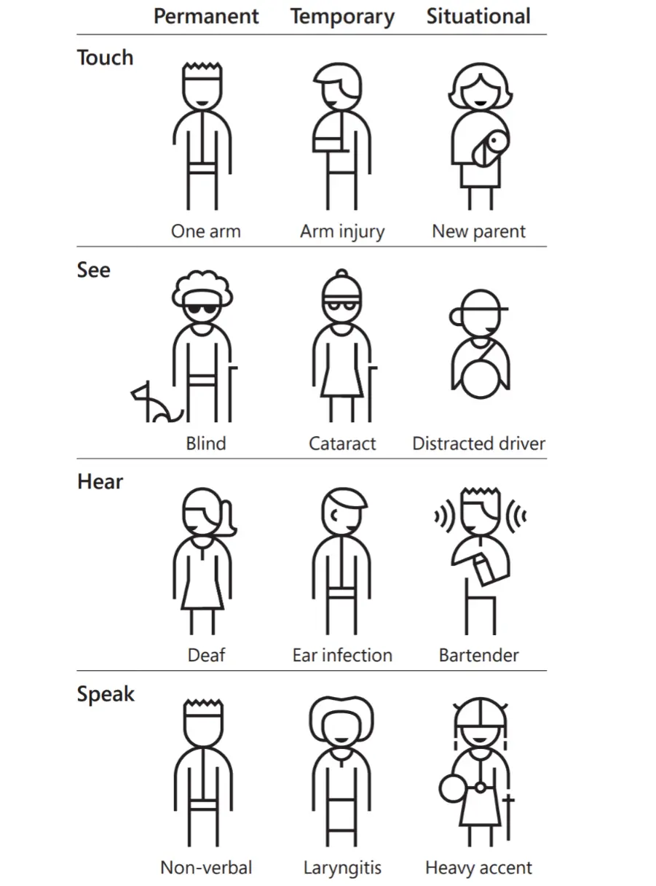

Build Bridges Not Walls
Accesible and Inclusive Design
Edcuation Ableism Technology Disability UX Design Access Inclusive
Accessible and inclusive design no doubt had been more demanding in the best way possible. As we strive to create a society that tends to people from all walks of life, it becomes imperative to understand and implement designs that prioritizes all people. You are likely to make assumptions based on your own experience and biases. In the words of Derek Featherstone, “Accessibility is an outcome. Inclusive design is a process.”
Accessibility by dictionary definition says, “the quality of being easy to obtain and use. ” As well as, “the quality of being easily understood and appreciated.” At a design standpoint, think about the numerous scenarios of how different users would need to do to obtain the product. For instance, if you have created a webpage, can a screen reader read the information from that page? Screen reading is the bridge that connects a user with visual impairment to information that they want to access. If this aspect of the design is missing, your webpage is not accessible to a large number of users with visual impairments.
On the other hand, inclusive design is a mindset that embraces user diversity and engages in the process to understand the various needs of all users. Inclusive design aims to provide a user-friendly experience for everybody. To take part in inclusive design, one has to recognize exclusion, learn from diversity and solve for one and extent to many. highlights how everyone can benefit from a designer’s focus on accessibility. Below is a visual representation of types of temporary and permanent disabilities.
According to the World Health Organization, 1.3 billion people (16% of the world’s population, or 1 in 6 people) have some form of disability. For a very long time, people with disabilities are marginalized by the ableist context of our society through school, work and by others. Until this day this community continues to fight for their right for accessibility, equality and equity. With the power of the dynamic duo called accessible and inclusive design we will be able to serve all people through various platforms such as webpage and apps. No matter who you are and your abilities, we all can experience technology. The most impactful way for to learn more about different groups of people is to do research and follow through activist's work. For example, disability right activists such as Alice Wong amd Judy Hueumann.